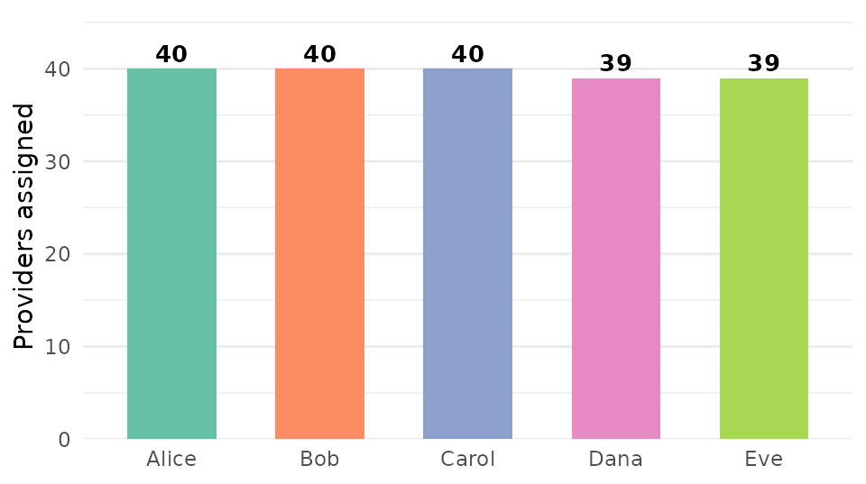

End-to-End Mystery-Caller Workflow Orchestration
Source:vignettes/workflow-orchestration.Rmd
workflow-orchestration.Rmd1. Workflow Overview
Mystery-caller studies are a form of audit research in which trained
research assistants — referred to here as field callers or
lab assistants — pose as prospective patients and attempt to
schedule appointments with physicians identified from a national
provider database. The mysterycall package manages every
computational step of that pipeline, from pulling National Provider
Identifier (NPI) records through writing the final analysis-ready data
set.
1.1 The full pipeline as a directed acyclic graph
┌─────────────────────┐
│ NPI Search │ mysterycall_search_npi() / NPPES API
│ (taxonomy terms) │
└──────────┬──────────┘
│ raw provider roster
▼
┌─────────────────────┐
│ Phase 1 Cleaning │ mysterycall_clean_phase1()
│ · dedup names │
│ · validate phones │
│ · flag missings │
│ · generate IDs │
└──────────┬──────────┘
│ clean roster + audit JSON
▼
┌─────────────────────┐
│ NPI Validation │ mysterycall_validate_npi()
│ (Luhn checksum) │ mysterycall_check_duplicates()
└──────────┬──────────┘
│ validated roster
▼
┌─────────────────────┐
│ Split into │ mysterycall_split_and_save()
│ Caller Workbooks │
└──────┬──────────────┘
│ one Excel file per caller
▼
┌─────────────────────┐
│ [Field Callers] │ (human step — callers make calls, fill Excel)
│ make calls, │
│ record outcomes │
└──────────┬──────────┘
│ returned Excel workbooks
▼
┌─────────────────────┐
│ Phase 2 Cleaning │ mysterycall_rename_columns()
│ · harmonise cols │ mysterycall_clean_phase2()
│ · parse outcomes │
└──────────┬──────────┘
│ standardised outcome data
▼
┌─────────────────────┐
│ Quality Check │ mysterycall_save_quality_table()
│ per-caller stats │
└──────────┬──────────┘
│ QA snapshot
▼
┌─────────────────────┐
│ Coverage Monitor │ mysterycall_not_contacted_states()
│ · which states │
│ have zero calls? │
└─────────────────────┘1.2 Phase 1 vs Phase 2: what each phase does
Phase 1 happens before callers pick up the phone. Its job is to turn a raw export from NPPES (or a similar roster) into a clean, validated list that is ready to be handed to field callers. Concretely, Phase 1:
- Strips whitespace and normalises letter case in provider names.
- Validates and formats phone numbers.
- Assigns a reproducible random study ID to every row, including rows where the NPI is missing.
- Flags data-quality problems (empty names, missing last names, duplicate entries) without silently dropping any rows.
- Optionally duplicates each row so that a single provider appears once for Medicaid and once for private insurance — a common design in disparity studies.
- Writes a machine-readable audit JSON to disk so that every decision is traceable.
Phase 2 happens after callers return their completed workbooks. Its job is to harmonise the heterogeneous column names that inevitably accumulate across five or ten individual Excel files and to normalise the free-text outcome values (e.g., “yes”, “YES”, “Y”, “offered” → a single canonical code) so that the merged file is analysis-ready.
1.3 Two ways to run the pipeline
Option A — One-call orchestration (recommended for routine studies):
result <- mysterycall_run_workflow(
taxonomy_terms = c("207V00000X", "207VB0002X"),
name_data = provider_names_df,
phase1_data = raw_roster,
lab_assistant_names = c("Alice", "Bob", "Carol", "Dana", "Eve"),
output_directory = "/network/study/phase1_output",
phase2_data = "/network/study/returned_workbooks",
phase2_output_directory = "/network/study/phase2_output",
quality_check_path = "/network/study/qa/quality_table.csv",
all_states = state.abb,
verbose = TRUE
)Option B — Step-by-step (recommended when debugging or adapting the workflow to an unusual study design):
Each function documented in Sections 2–7 below can be called independently. Results flow from one function to the next as ordinary R data frames, so you can inspect, filter, or modify the intermediate outputs at any point.
2. Phase 1 Cleaning: mysterycall_clean_phase1()
Phase 1 cleaning is the most complex and consequential step in the
pipeline. Every row that passes through this function is tagged with a
set of processing_flag_* columns that record exactly why it
was modified. This makes the cleaning process auditable by anyone — a
collaborator, a journal reviewer, or future-you two years from now.
2.1 Required input: what phase1_data must contain
phase1_data must be a data frame (or a path to a CSV /
Excel file) with at least the following columns:
| Column | Description |
|---|---|
npi |
10-digit NPI as a character string (may be NA) |
provider_first_name |
Provider’s first name (may be empty) |
provider_last_name_legal_name |
Provider’s legal last name |
provider_business_practice_location_address_telephone_number |
Phone number (raw format, may have dashes or dots) |
Additional columns (specialty, address, etc.) are passed through untouched.
2.2 Key parameters
result <- mysterycall_clean_phase1(
phase1_data = raw_roster, # required: raw data frame or file path
output_directory = "/study/output", # required: directory for CSV + audit JSON
output_format = "csv", # "csv" (default), "rds", or "parquet"
verbose = TRUE, # print step-by-step progress
duplicate_rows = TRUE, # TRUE = one row per insurance scenario
id_seed = 20240101L, # integer seed for reproducible ID generation
parent_cohort_hash = NULL # link to a previous run's hash (optional)
)duplicate_rows = TRUE is the correct
setting for disparity studies that test both Medicaid and
private-insurance callers at the same practices. When TRUE,
every row in phase1_data is copied: one copy gets
insurance = "Medicaid" and the other gets
insurance = "Private". The
processing_flag_is_duplicate column records which rows are
the duplicates.
id_seed controls the random number
generator used to assign study IDs to rows where the NPI is
NA. Fixing this seed ensures that if you re-run Phase 1 on
the same data you get identical IDs — crucial for linking records across
pipeline runs.
parent_cohort_hash lets you chain audit
trails. If Phase 1 was already run for a pilot sample and you are now
adding providers, pass the pilot’s cohort_hash here so the
new audit JSON references the parent batch.
2.3 Columns added by Phase 1
Phase 1 adds the following processing_flag_* columns to
the returned data frame. These columns are logical
(TRUE/FALSE).
| Column | Meaning when TRUE
|
|---|---|
processing_flag_empty_name |
Both first and last name fields are blank or NA
|
processing_flag_no_last_name |
Last name field is blank or NA (first name may still be
present) |
processing_flag_generated_id |
NPI was missing; a random study ID was assigned by the package |
processing_flag_is_duplicate |
Row was created by duplicate_rows = TRUE and is a copy
of another row |
These flags are never used to silently drop rows. Every flagged row is retained in the output. The flags exist so that downstream analysts can filter, weight, or report on data-quality issues without re-running the cleaning step.
2.4 The audit trail JSON
Every call to mysterycall_clean_phase1() writes a JSON
file to output_directory. The filename contains the cohort
hash so it is unique across runs. The JSON contains:
{
"cohort_hash": "a3f8c1d2...",
"parent_cohort_hash": null,
"timestamp": "2024-03-15T09:22:41Z",
"input_rows": 847,
"output_rows": 1694,
"empty_names_count": 12,
"rows_retained_pct": 100.0,
"quality_metrics": {
"completeness_npi": 0.961,
"completeness_phone": 0.983,
"completeness_names": 0.986
},
"parameters": {
"duplicate_rows": true,
"id_seed": 20240101,
"output_format": "csv"
}
}Key fields:
-
input_rows— number of rows inphase1_databefore any processing. -
output_rows— number of rows in the returned data frame. Ifduplicate_rows = TRUEthis will be approximately twiceinput_rows. -
empty_names_count— number of rows where both name fields were blank. -
rows_retained_pct— always 100 in standard runs; any value below 100 signals that rows were filtered (which only happens if you setdrop_empty_names = TRUE, a non-default option). -
quality_metrics— proportion of rows with non-missing values for each critical field. Use these to decide whether the roster is ready for field work.
2.5 Accessing the returned attributes
The returned data frame carries two attributes that link it to the audit trail:
# The cohort hash uniquely identifies this batch
cohort_id <- attr(result, "cohort_hash")
cat("Cohort hash:", cohort_id, "\n")
# The path to the JSON file on disk
audit_path <- attr(result, "audit_trail_path")
cat("Audit trail written to:", audit_path, "\n")
# Read the audit trail back for inspection
audit <- jsonlite::read_json(audit_path, simplifyVector = TRUE)
cat("Completeness — NPI: ", audit$quality_metrics$completeness_npi, "\n")
cat("Completeness — Phone:", audit$quality_metrics$completeness_phone, "\n")Store cohort_id in your lab notebook or electronic
data-capture system. It is the stable reference that links every
downstream output (split workbooks, Phase 2 files, model results) back
to this exact version of the cleaned roster.
2.6 Common mistake: missing required columns
If phase1_data does not contain an npi
column, mysterycall_clean_phase1() throws an informative
error immediately:
# This will fail with a clear error message
bad_data <- data.frame(
provider_first_name = "Jane",
provider_last_name_legal_name = "Smith",
phone = "303-555-0100"
# 'npi' column is absent
)
mysterycall_clean_phase1(
phase1_data = bad_data,
output_directory = tempdir()
)
#> Error in mysterycall_clean_phase1():
#> Required column 'npi' not found in phase1_data.
#> Found columns: provider_first_name, provider_last_name_legal_name, phone
#> Please rename or add the 'npi' column before calling this function.3. NPI Validation: mysterycall_validate_npi()
The National Provider Identifier is a 10-digit number assigned by
CMS. The last digit is a Luhn checksum digit — a
single-digit error-detection code that catches single-digit
transcription errors and most transposition errors (e.g., swapping
adjacent digits). mysterycall_validate_npi() applies the
Luhn algorithm to every NPI in the data and marks invalid ones.
3.1 Why Luhn validation matters
A roster built from web scraping, OCR, or manual data entry will contain transcription errors. An invalid NPI cannot be verified against the NPPES database, meaning you may end up calling a provider who does not exist or, worse, a provider with a different specialty than you intended to sample. A few minutes of Luhn validation before the field work starts prevents these problems entirely.
3.2 Using the function
validated <- mysterycall_validate_npi(
data = phase1_result,
npi_column = "npi" # default; change if your column has a different name
)
# The function adds a logical column 'npi_valid'
table(validated$npi_valid, useNA = "ifany")
#>
#> FALSE TRUE <NA>
#> 14 1678 2Valid vs invalid — a quick illustration:
| NPI | Valid? | Reason |
|---|---|---|
1234567893 |
TRUE | Passes Luhn checksum |
1234567890 |
FALSE | Fails Luhn checksum |
123456789 |
FALSE | Only 9 digits (must be exactly 10) |
12345678AB |
FALSE | Contains non-numeric characters |
NA |
NA | Missing — handled separately |
The function always returns NPI as a character string, even if the input column contains integers. This is important because leading zeros (rare but possible) would be silently dropped by numeric storage.
3.3 Combining with duplicate detection
After validation, use mysterycall_check_duplicates() to
identify providers who appear multiple times in the roster. Duplicate
entries inflate your apparent sample size and, if both entries are
assigned to different callers, result in the same provider being called
twice — a protocol violation in most IRB applications.
dup_report <- mysterycall_check_duplicates(
data = validated,
id_column = "npi",
name_cols = c("provider_first_name", "provider_last_name_legal_name")
)
# Rows where npi_count > 1 are duplicate providers
dups <- dup_report[dup_report$npi_count > 1, ]
cat(nrow(dups), "rows are duplicate NPI entries\n")
# Remove duplicates before splitting
clean_roster <- validated[!duplicated(validated$npi) | is.na(validated$npi), ]4. Splitting into Caller Workbooks:
mysterycall_split_and_save()
Once the roster is clean and validated, it must be divided among the
field callers. mysterycall_split_and_save() does this in a
reproducible, auditable way and writes one Excel workbook per
caller.
4.1 Purpose and motivation
Imagine you have 500 providers and 5 lab assistants. You could manually copy-paste rows into five spreadsheets, but that process is error-prone (rows get skipped or duplicated), is not reproducible (results differ if you redo it), and leaves no record of who was assigned what. This function solves all three problems.
4.2 Key parameters
workbooks <- mysterycall_split_and_save(
data = clean_roster,
lab_assistant_names = c("Alice", "Bob", "Carol", "Dana", "Eve"),
output_directory = "/study/workbooks",
split_insurance_order = c("Medicaid", "Private"),
seed = 1978L # default; controls assignment shuffle
)lab_assistant_names — a character
vector of caller names. Each name becomes a separate Excel file:
Alice.xlsx, Bob.xlsx, etc. The length of this
vector determines how many workbooks are produced.
split_insurance_order — controls the
order in which insurance scenarios appear within each workbook. If a
provider appears once for Medicaid and once for Private insurance
(because duplicate_rows = TRUE was used in Phase 1), the
caller will see the Medicaid row first and the Private row second within
their workbook. This is useful for standardising the call script
order.
seed = 1978 — the default seed has been
the package default since version 1.0 and is the recommended value for
all studies unless your protocol specifies otherwise. Changing the seed
changes which providers are assigned to which caller; document any
non-default seed in your methods section.
4.3 How assignment works: round-robin
Providers are assigned to callers in a round-robin pattern:
Provider 1 → Alice
Provider 2 → Bob
Provider 3 → Carol
Provider 4 → Dana
Provider 5 → Eve
Provider 6 → Alice (wraps around)
Provider 7 → Bob
...This means workloads are balanced within ±1 provider across all
callers for any roster size. The assignment is deterministic given the
seed, the order of rows in data, and the order of names in
lab_assistant_names.
callers <- c("Alice", "Bob", "Carol", "Dana", "Eve")
n_total <- 198L
base_load <- n_total %/% length(callers)
extra <- n_total %% length(callers)
loads <- c(rep(base_load + 1L, extra), rep(base_load, length(callers) - extra))
wb_df <- data.frame(
caller = factor(callers, levels = callers),
n = loads
)
ggplot2::ggplot(wb_df, ggplot2::aes(x = caller, y = n, fill = caller)) +
ggplot2::geom_col(width = 0.6) +
ggplot2::geom_text(ggplot2::aes(label = n), vjust = -0.4, size = 3.5,
fontface = "bold") +
ggplot2::scale_fill_brewer(palette = "Set2", guide = "none") +
ggplot2::scale_y_continuous(expand = ggplot2::expansion(mult = c(0, 0.15)),
limits = c(0, NA)) +
ggplot2::labs(x = NULL, y = "Providers assigned") +
ggplot2::theme_minimal(base_size = 11) +
ggplot2::theme(panel.grid.major.x = ggplot2::element_blank())
Example round-robin workload distribution across five callers for a 198-provider roster. Differences of at most 1 provider guarantee balanced calling burden.
4.4 Verifying the split: no omissions, no duplicates
Before sending workbooks to callers, verify that every provider appears in exactly one workbook:
# Read all workbooks back and combine
all_workbooks <- lapply(workbooks$file_paths, readxl::read_excel)
combined <- dplyr::bind_rows(all_workbooks)
# Check 1: same number of rows as the input
stopifnot(nrow(combined) == nrow(clean_roster))
# Check 2: no NPI appears in more than one workbook
npi_counts <- table(combined$npi)
if (any(npi_counts > 1)) {
warning("Some NPIs appear in more than one workbook!")
print(npi_counts[npi_counts > 1])
} else {
message("Split verified: every provider appears in exactly one workbook.")
}5. Phase 2 Cleaning: mysterycall_clean_phase2() and
mysterycall_rename_columns()
After field callers return their completed workbooks, the returned files must be merged and standardised. This is Phase 2. The core challenge is that callers — despite receiving identical templates — often rename columns, insert their own columns, or spell outcome values differently. Phase 2 handles all of this programmatically.
5.1 Why column names are always inconsistent
Even with a rigid Excel template, callers rename columns in practice:
| Caller | Column they return | Intended column |
|---|---|---|
| Alice | Appointment Offered? |
appointment_offered |
| Bob | Appt_Offered |
appointment_offered |
| Carol | appointment offered |
appointment_offered |
| Dana | APPT OFFERED |
appointment_offered |
| Eve | appointment_offered |
appointment_offered ✓ |
mysterycall_rename_columns() resolves this via
fuzzy substring matching. You provide a list of target
substrings to look for and the standardised names to replace them
with.
5.2 mysterycall_rename_columns(): fuzzy column name
matching
# Standardise column names across all returned workbooks
renamed <- mysterycall_rename_columns(
data = raw_returned_workbook,
target_strings = c("appt", "wait", "insurance", "outcome", "caller"),
new_names = c("appointment_offered", "wait_days",
"insurance_type", "call_outcome", "caller_name")
)target_strings — a character vector of
substrings (case-insensitive) to search for in the column names of
data. The function looks for each substring anywhere in the
column name.
new_names — a character vector of the
same length as target_strings. Each element is the
standardised name to assign when the corresponding substring is
found.
If a target substring does not match any column in the data, the function emits a warning rather than an error. This is intentional: some callers may legitimately omit optional columns, and a warning lets you decide whether the missing column is a problem without crashing the pipeline.
# If no column contains "wait", you get:
#> Warning in mysterycall_rename_columns():
#> Target substring 'wait' did not match any column name.
#> Available columns: npi, provider_last_name_legal_name, appointment_offered, ...
#> Proceeding without renaming for this target.5.3 mysterycall_clean_phase2(): the full Phase 2
cleaning step
phase2_result <- mysterycall_clean_phase2(
data = "/study/returned_workbooks", # directory of Excel files
output_directory = "/study/phase2_output",
target_strings = c("appt", "wait", "insurance", "outcome", "caller"),
new_names = c("appointment_offered", "wait_days",
"insurance_type", "call_outcome", "caller_name"),
verbose = TRUE
)When data is a directory path,
mysterycall_clean_phase2() reads every .xlsx
and .xls file in that directory, applies
mysterycall_rename_columns() to each one individually, then
row-binds them into a single data frame. This is the recommended
approach for the standard workflow.
When data is already a data frame, it
is processed directly. This is useful when you have already combined the
workbooks manually or want to process a single file.
A complete example showing messy column normalisation:
# Simulate two messy returned workbooks
alice_wb <- data.frame(
NPI = c("1234567893", "9876543210"),
`Last Name` = c("Smith", "Jones"),
`Appt Offered?` = c("Yes", "No"),
`Wait (days)` = c(14L, NA_integer_),
check.names = FALSE
)
bob_wb <- data.frame(
npi = c("1122334455", "5544332211"),
provider_lname = c("Garcia", "Patel"),
appointment_offered = c("YES", "offered"),
wait_days = c(7L, 21L)
)
# Phase 2 standardises both:
# After mysterycall_rename_columns() each workbook will have:
# npi, provider_last_name_legal_name, appointment_offered, wait_days6. Quality Check Table:
mysterycall_save_quality_table()
During and immediately after the calling period, study coordinators need a quick, printable summary showing whether each caller is on track. The quality check table provides this.
6.1 What the table contains
mysterycall_save_quality_table(
data = phase2_result,
output_path = "/study/qa/quality_table.csv",
strata_col = "insurance_type" # optional: stratify rows by payer
)The output is a CSV file with one row per caller (and optionally per insurance stratum) containing:
| Column | Description |
|---|---|
caller_name |
Lab assistant name |
insurance_type |
Insurance stratum (if strata_col supplied) |
n_assigned |
Total rows assigned to this caller |
n_completed |
Rows where call_outcome is non-missing |
completion_pct |
n_completed / n_assigned × 100 |
missing_phone_pct |
Rows with no phone number recorded |
missing_outcome_pct |
Rows where call outcome was left blank |
6.2 Flagging underperforming callers
The standard threshold in most mystery-caller protocols is 80% completion. Read the table back and flag callers below that threshold:
qa <- read.csv("/study/qa/quality_table.csv")
# Flag callers below 80% completion
qa$flag <- ifelse(qa$completion_pct < 80, "REVIEW", "OK")
# Print callers needing review
knitr::kable(
qa[qa$flag == "REVIEW", ],
caption = "Callers below 80% completion threshold"
)Use this table in your weekly coordinator check-ins to identify callers who may need retraining or whose workbooks may have been corrupted during return.
7. Coverage Monitoring:
mysterycall_not_contacted_states()
After field work concludes, verify that the study has achieved
geographic coverage across all intended states.
mysterycall_not_contacted_states() identifies states with
zero completed calls.
7.1 The all_states parameter
not_contacted <- mysterycall_not_contacted_states(
data = phase2_result,
all_states = state.abb # all 50 states, or a custom list
)all_states is the complete expected set
of states for your study. If your sampling frame includes only the 12
most populous states, pass only those 12 codes. The function computes
the set difference between all_states and the states
present in data where call_outcome is
non-missing.
7.2 Visualising contacted vs not-contacted states
# Quick cross-tabulation of states by contact status
contacted_states <- unique(phase2_result$state[
!is.na(phase2_result$call_outcome)
])
status_vec <- setNames(
ifelse(state.abb %in% contacted_states, "Contacted", "Not contacted"),
state.abb
)
print(table(status_vec))
#>
#> Contacted Not contacted
#> 43 77.3 Filtering for follow-up prioritisation
# Which specific states need follow-up?
cat("States with zero completed calls:\n")
cat(paste(not_contacted$state, collapse = ", "), "\n")
#> States with zero completed calls:
#> AK, MT, ND, SD, VT, WV, WY
# Subset the roster to those states for a targeted second calling wave
followup_roster <- phase2_result[
phase2_result$state %in% not_contacted$state, ]
cat(nrow(followup_roster), "providers in under-contacted states\n")Geographic gaps discovered at this stage can inform a second wave of calls or a discussion with your team about whether certain rural states should be excluded from the denominator with appropriate justification.
8. One-Call Orchestration:
mysterycall_run_workflow()
For standard studies where the default pipeline is appropriate,
mysterycall_run_workflow() executes all steps in the
correct order and returns a named list of all intermediate and final
artifacts.
8.1 Full parameter table
| Parameter | Type | Default | Description |
|---|---|---|---|
taxonomy_terms |
character |
required | NUCC taxonomy codes for NPI search |
name_data |
data.frame |
required | Provider name crosswalk (for name standardisation) |
phase1_data |
data.frame or path |
required | Raw roster for Phase 1 |
lab_assistant_names |
character |
required | Caller names for workbook splitting |
output_directory |
character |
required | Root output directory (Phase 1 and workbooks) |
phase2_data |
data.frame or path |
required | Returned workbooks for Phase 2 |
phase2_output_directory |
character |
required | Where Phase 2 output is written |
quality_check_path |
character |
required | Where the QA CSV is written |
phase1_output_directory |
character |
output_directory |
Override for Phase 1 output |
all_states |
character |
state.abb |
States in scope for coverage check |
verbose |
logical |
TRUE |
Print progress to console |
8.2 The returned list structure
names(result)
#> [1] "phase1_result" "validated_npi"
#> [3] "workbook_paths" "phase2_result"
#> [5] "quality_table" "not_contacted_states"
#> [7] "workflow_summary" "cohort_hash"
#> [9] "audit_trail_path" "run_timestamp"Each element is the direct output of the corresponding pipeline
function, so you can pass result$phase1_result to
downstream analysis functions just as you would if you had called
mysterycall_clean_phase1() directly.
8.3 A complete realistic call
result <- mysterycall_run_workflow(
taxonomy_terms = c(
"207V00000X", # Obstetrics & Gynecology
"207VB0002X", # Urogynecology
"207VX0201X" # Gynecologic Oncology
),
name_data = name_crosswalk_df,
phase1_data = raw_nppes_export,
lab_assistant_names = c("Alice Nguyen", "Bob Patel",
"Carol Smith", "Dana Lee", "Eve Gonzalez"),
output_directory = "/network/obgyn_study/phase1",
phase2_data = "/network/obgyn_study/returned_workbooks",
phase2_output_directory = "/network/obgyn_study/phase2",
quality_check_path = "/network/obgyn_study/qa/quality_check.csv",
all_states = state.abb,
verbose = TRUE
)8.4 mysterycall_run_workflow_logged(): structured JSON
logging
For large studies (> 1000 providers) or multi-site studies where
you cannot be present at the console, use
mysterycall_run_workflow_logged(). It is
functionally identical to
mysterycall_run_workflow() but wraps every pipeline stage
in structured JSON logging:
result <- mysterycall_run_workflow_logged(
# ... same parameters as mysterycall_run_workflow() ...
log_file = "/network/obgyn_study/logs/workflow_run.jsonl"
)Each line of the .jsonl log file contains:
{"stage": "phase1_clean", "status": "started", "timestamp": "2024-03-15T09:22:41Z", "input_rows": 847}
{"stage": "phase1_clean", "status": "completed", "timestamp": "2024-03-15T09:22:43Z", "output_rows": 1694, "duration_sec": 2.1}
{"stage": "npi_validate", "status": "started", "timestamp": "2024-03-15T09:22:43Z"}
...If the workflow crashes mid-run, the log file shows exactly which stage failed and what the input state was, so you can restart from that stage without re-running earlier steps.
9. Interpreting the Workflow Summary
After mysterycall_run_workflow() returns, the first
thing to inspect is result$workflow_summary. This is a data
frame with one row per pipeline stage:
knitr::kable(
result$workflow_summary,
caption = "Row counts through the pipeline"
)| Stage | Input rows | Output rows | Rows retained |
|---|---|---|---|
phase1_clean |
847 | 1694 | 100.0% |
npi_validate |
1694 | 1694 | 100.0% |
split_workbooks |
1694 | 1694 | 100.0% |
phase2_clean |
1694 | 1688 | 99.6% |
quality_check |
1688 | — | — |
coverage_monitor |
1688 | — | — |
The 0.4% row drop between split_workbooks and phase2_clean (6 rows) is typical: it reflects rows that callers deleted from their workbooks, possibly because they realised a phone number was a fax line or the provider had retired. Document these exclusions in your CONSORT flowchart.
Before proceeding to analysis, confirm:
-
rows_retainedfrom Phase 1 is 100% (no rows were silently dropped). - NPI validity rate is acceptable (> 95% is typical for NPPES data).
- Phase 2 completion is consistent with your calling protocol’s expected non-contact rate.
- The
cohort_hashinresult$cohort_hashmatches the hash stored in your lab notebook entry for this wave of data collection.
# Programmatic pre-analysis checks
stopifnot(
result$workflow_summary$rows_retained[1] == 100,
mean(result$validated_npi$npi_valid, na.rm = TRUE) > 0.95,
result$cohort_hash == "a3f8c1d2..." # paste the hash from your lab notebook
)10. Practical Guidance
10.1 Always run the preflight check first
Before passing any data to the workflow, run:
mysterycall_preflight_check(phase1_data = raw_roster)This validates that all required columns are present, checks for completely empty data frames, and warns about potential encoding problems in provider names (accented characters, non-ASCII punctuation) that could cause silent mismatches later in the pipeline. Addressing preflight warnings costs minutes; discovering them after six weeks of field work costs months.
10.2 Use a network drive for output_directory
All team members need read access to the Phase 1 output, the split
workbooks, and the Phase 2 output. Placing output_directory
on a shared network drive or a cloud-synced folder (Box, Dropbox,
OneDrive) ensures that callers can download their workbooks without
emailing files and that coordinators can monitor progress in real
time.
Avoid paths with spaces. Use hyphens or underscores:
# Good
output_directory = "/Volumes/ResearchDrive/obgyn_mystery_caller_2024"
# Risky on some OS + R version combinations
output_directory = "/Volumes/Research Drive/OBGYN Mystery Caller 2024"10.3 Store the cohort_hash in your lab notebook
The cohort_hash is the single most important artifact
for linking your raw data to your published analysis. Write it in your
lab notebook or your IRB protocol amendment. A typical entry looks
like:
Wave 1 data collection completed 2024-03-22. Phase 1 cohort hash:
a3f8c1d2b5e7f091. Audit trail at/network/obgyn_study/phase1/audit_a3f8c1d2.json.
This record lets you — or a journal auditor — reproduce the exact dataset used in your analysis three years after the study is complete.
10.4 For large studies, use the logged variant
For studies with more than 1,000 providers, use
mysterycall_run_workflow_logged(). If Phase 2 cleaning
fails on a corrupted workbook at 2 AM, the log file tells you exactly
which workbook caused the failure. You can fix that one file and re-run
Phase 2 alone rather than restarting the entire workflow.
The logged variant also produces timing information for each stage.
In large studies, Phase 1 with duplicate_rows = TRUE and
output_format = "parquet" is typically the fastest
combination (5–10× faster than CSV for > 5,000 rows).
# Recommended settings for large studies
result <- mysterycall_run_workflow_logged(
phase1_data = large_roster,
output_format = "parquet", # faster than CSV for > 5,000 rows
duplicate_rows = TRUE,
verbose = FALSE, # suppress console output in batch scripts
log_file = "/logs/workflow.jsonl"
)